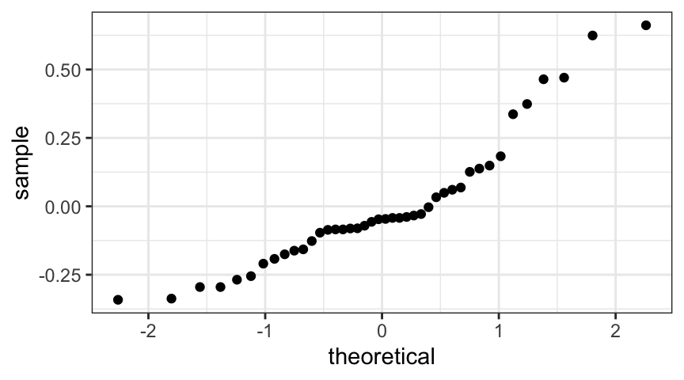

library(mosaic)
rflip()
Flipping 1 coin [ Prob(Heads) = 0.5 ] ...
H
Number of Heads: 1 [Proportion Heads: 1]This chapter is concerned with statistical hypothesis testing, and how we can use it to make inferences and draw conclusions from data about questions of scientific interest.
Before we begin to talk about hypothesis testing, let’s review the general process of designing and carrying out a statistical experiment.
Determine the question of interest.
Just what is it we want to know? It may take some effort to make a vague idea precise. The precise questions may not exactly correspond to our vague questions, and the very exercise of stating the question precisely may modify our question. Sometimes we cannot come up with any way to answer the question we really want to answer, so we have to live with some other question that is not exactly what we wanted but is something we can study and will (we hope) give us some information about our original question.
Determine the population.
Just who or what do we want to know about? For example, are we only interested in one specific person, or women in general, or all women, or all people? Or, are we interested in the energy efficiency of one particular device, or all the machines in a certain factory, or all machines of a certain type, or all machines of a certain class, or all factories in a certain industry?
Select measurements.
We are going to need some data. We get our data by making some measurements. These might be physical measurements with some device (like a ruler or a scale). But there are other sorts of measurements too, like the answer to a question on a form. Sometimes it is tricky to figure out just what to measure. (How do we measure happiness or intelligence, for example?) Just how we do our measuring will have important consequences for the subsequent statistical analysis. The recorded values of these measurements are called variables (because the values vary from one individual to another).
Determine the sample.
Usually we cannot measure every individual in our population; we have to select some to measure. But how many and which ones? These are important questions that must be answered. Generally speaking, bigger is better, but it is also more expensive. Moreover, no size is large enough if the sample is selected inappropriately.
For example, if we wanted to draw conclusions about energy use across a whole industry, we would have to be careful not to sample from just a single factory, or a single type of manufacturing device. If we wanted to draw conclusions about all people, we would have to be careful not to study only male college students. The sample should be a random selection from the whole population (or as close as we can get to that standard).
Make and record the measurements.
Once we have the design figured out, we have to do the legwork of data collection. This can be a time-consuming and tedious process. A study of public opinion may require many thousands of phone calls or personal interviews. In a laboratory setting, each measurement might be the result of a carefully performed laboratory experiment.
Organize the data.
Once the data have been collected, it is often necessary or useful to organize them. Data are typically stored in spreadsheets or in other formats that are convenient for processing with statistical packages. Very large data sets are often stored in databases.
Part of the organization of the data may involve producing graphical and numerical summaries of the data. These summaries may give us initial insights into our questions or help us detect errors that may have occurred to this point.
Draw conclusions from data.
Once the data have been collected, organized, and analyzed, we need to reach a conclusion. What is the answer to our scientific question? Is our idea or hypothesis about the way things work incorrect, or do the data support it? How sure are we about these conclusions?
Produce a report.
Typically the results of a statistical study are reported in some manner. This may be as a refereed article in an academic journal, as an internal report to a company, or as a solution to a problem on a homework assignment. These reports may themselves be further distilled into press releases, newspaper articles, advertisements, and the like. The mark of a good report is that it provides the essential information about each of the steps of the study.
At this point, you may be wondering who the innovative scientist was and what the results of the experiment were. The scientist was R. A. Fisher, who first described this situation as a pedagogical example in his 1925 book on statistical methodology Fisher (1925). Fisher developed statistical methods that are among the most important and widely used methods to this day, and most of his applications were biological.
You might also be curious about how the experiment came out. How many cups of tea were prepared? How many did the woman correctly identify? What was the conclusion?
Fisher never says. In his book he is interested in the method, not the particular results. But let’s suppose we decide to test the lady with ten cups of tea.
We’ll flip a coin to decide which way to prepare the cups.
If we flip a head, we will pour the milk in first; if tails, we put the tea in first. Then we present the ten cups to the lady and have her state which ones she thinks were prepared each way.
It is easy to give her a score (9 out of 10, or 7 out of 10, or whatever it happens to be). It is trickier to figure out what to do with her score. Even if she is just guessing and has no idea, she could get lucky and get quite a few correct – maybe even all 10. But how likely is that?
Here’s one way we could find out. Suppose I flip a coin ten times and record the pattern of heads and tails. Your job is to guess the sequence of heads and tails. To make it more interesting, we’ll get a lot of other people to guess too and see how everyone does.
\(\vdots\)
If we compare all of the guessers, we will undoubtedly see that some did better and others worse.
Now let’s suppose the lady gets 9 out of 10 correct. That’s not perfect, but it is better than we would expect for someone who was just guessing. On the other hand, it is not impossible to get 9 out of 10 just by guessing. So here is Fisher’s great idea: Let’s figure out how hard it is to get 9 out of 10 by guessing. If it’s not so hard to do, then perhaps that’s just what happened, so we won’t be too impressed with the lady’s tea tasting ability. On the other hand, if it is really unusual to get 9 out of 10 correct by guessing, then we will have some evidence that she must be able to tell something.
But how do we figure out how unusual it is to get 9 out of 10 just by guessing? We’ll learn another method later, but for now, let’s just flip a bunch of coins and keep track. If the lady is just guessing, she might as well be flipping a coin.
So here’s the plan. We’ll flip 10 coins. We’ll call the heads correct guesses and the tails incorrect guesses. Then we’ll flip 10 more coins, and 10 more, and 10 more, and . That would get pretty tedious. Fortunately, computers are good at tedious things, so we’ll let the computer do the flipping for us using a tool in the mosaic package.
The rflip() function can flip one coin
library(mosaic)
rflip()
Flipping 1 coin [ Prob(Heads) = 0.5 ] ...
H
Number of Heads: 1 [Proportion Heads: 1]or a number of coins
rflip(10)
Flipping 10 coins [ Prob(Heads) = 0.5 ] ...
T H T T H T T T H T
Number of Heads: 3 [Proportion Heads: 0.3]and show us the results.
Typing rflip(10) a bunch of times is almost as tedious as flipping all those coins. But it is not too hard to tell R to do() this a bunch of times.
do(2) * rflip(10)Let’s get R to do() it for us 10,000 times and make a table and a histogram of the results.
RandomLadies <- do(10000) * rflip(10)
gf_histogram( ~ heads, data = RandomLadies, binwidth = 1) tally( ~ heads, data = RandomLadies)heads
0 1 2 3 4 5 6 7 8 9 10
5 102 467 1203 2048 2470 2035 1140 415 108 7 tally( ~ heads, data = RandomLadies, format = 'percent')heads
0 1 2 3 4 5 6 7 8 9 10
0.05 1.02 4.67 12.03 20.48 24.70 20.35 11.40 4.15 1.08 0.07 tally( ~ heads, data = RandomLadies, format = 'proportion')heads
0 1 2 3 4 5 6 7 8 9 10
0.0005 0.0102 0.0467 0.1203 0.2048 0.2470 0.2035 0.1140 0.0415 0.0108 0.0007 You might be surprised to see that the number of correct guesses is exactly 5 (half of the 10 tries) only 25% of the time. But most of the results are quite close to 5 correct. 67% of the results are 4, 5, or 6, for example. And 90% of the results are between 3 and 7 (inclusive). But getting 8 correct is a bit unusual, and getting 9 or 10 correct is even more unusual.
So what do we conclude? It is possible that the lady could get 9 or 10 correct just by guessing, but it is not very likely (it only happened in about 1.2% of our simulations). So one of two things must be true:
Although Fisher did not say how the experiment came out, others have reported that the lady correctly identified all 10 cups! Salsburg (2001)
This same reasoning can be applied to answer a wide range of questions that have a similar form. For example, the question of whether dogs can smell cancer could be answered essentially the same way (although it would be a bit more involved than preparing tea and presenting cups to the Lady).
In statistical hypothesis testing, we can follow the following general procedure. We usually begin with some idea about how the process we are studying should work. For example, we might have a hunch that highway bridges with higher traffic flows are in poorer condition, and therefore merit more frequent repairs. For statistical hypothesis testing, we must translate that “hunch” into a testable null hypothesis, often called \(H_0\): one that can be demonstrated to be very unlikely in light of our data. In the case of the bridges, a testable null hypothesis might be that bridge condition does not depend on traffic flow. Then, if our data shows a strong apparent relationship between condition and traffic, we have evidence to reject the null hypothesis, and the data support the idea that there is some relationship between condition and traffic.
Null hypothesis are usually “boring,” no-result hypotheses: there is no pattern; there is no relationship between the variables of interest; there is no difference between the two samples of interest. If we can reject the null hypothesis in a certain case, we have some evidence – but NOT proof – that there is an interesting pattern in our data, and thus in the population we are trying to draw conclusions about.
The alternative to the null hypothesis is called the alternative hypothesis, often called \(H_1\). The alternative hypothesis, stated most generally, is usually some form of “the null hypothesis is not true” – so there IS a pattern in the data, or a difference between the samples, etc.
In our bridge example, a statistical null hypothesis \(H_0\) might be: the true slope of the regression of condition as a function of traffic is 0.
Example 9.1 The following are examples of null hypotheses.
Hypothesis testing generally follows a four-step process.
The null hypothesis is on trial and innocent until proven guilty. We will render one of two verdicts: Reject the null hypothesis (guilty) or do not reject the null hypothesis (not guilty). *Important! We can never accept or prove either hypothesis – only reject the null (because it doesn’t seem compatible with the data), or fail to reject the null (since it appears plausibly compatible with teh data).
For a statistical hypothesis test, all the evidence against the null hypothesis must be summarized in a single number called the test statistic. It is a statistic because it is a number computed from the data. It is called a test statistic because we are using it to do hypothesis testing.
The p-value is a probability: Assuming the null hypothesis is true, how likely are we to get at least as much evidence against it as we have in our data (i.e., a test statistic at least as unusual as the one observed) just by random chance?
If the p-value is small, then one of two things is true:
For this reason we consider small p-values to provide evidence against the null hypothesis.
Example 9.2 For the lady tasting tea, this process looks like
\(H_0\): The probability of being correct is \(0.5\) (she’s just guessing).
\(H_a\) The probability of being correct is larger than \(0.5\) (she can do better than someone who just guesses).
Based on our empirical method, we estimate a p-value of
prop( ~ (heads >= 9), data = RandomLadies)prop_TRUE
0.0115 The probabilities for the number of correct guesses can be worked out theoretically as well. The resulting distribution is called a binomial distribution. As with other distributions we have seen, R includes the functions dbinom(), pbinom(), qbinom(), and rbinom().
gf_dist("binom", size = 10, prob = 0.5) # size = # of flips; prob = probability of headsdbinom(9, 10, .5) + dbinom(10, 10, .5)[1] 0.010742191 - pbinom(8, 10, .5) # Note: P(X >= 9) = 1 - P(X <= 8)[1] 0.01074219How small is “small”, and how small does a p-value have to be before we reject the null hypothesis? Often, a (usually called \(\alpha\)) of 0.05 is used. Sometimes \(\alpha = 0.01\) is used instead. Basically, this corresponds to a 5% chance of seeing results as extreme as those found in our data, were the null hypothesis really true. If we want to be more conservative about our judgement (not rejecting the null hypothesis unless the evidence in the data is stronger against it), we could use a smaller \(\alpha\) value.
It is also common for researchers to simply report the p-values they obtain from their analysis, allowing readers to draw conclusions on their own.
Example 9.3 This situation is so common that there is a function to do the calculations for us. We just need to provide the values of \(x\) and \(n\):
binom.test(x = 9, n = 10) # default test is 2-sided
data: 9 out of 10
number of successes = 9, number of trials = 10, p-value = 0.02148
alternative hypothesis: true probability of success is not equal to 0.5
95 percent confidence interval:
0.5549839 0.9974714
sample estimates:
probability of success
0.9 The output above doesn’t match what we obtained in Example exm-lady-binom because the alternative hypothesis is different. It accepts both low number of correct identifications (0 or 1) and high numbers (9 or 10) as evidence against the null hypothesis. If we want a one-sided p-value, we just need to ask:
binom.test(x = 9, n = 10, alternative = "greater")
data: 9 out of 10
number of successes = 9, number of trials = 10, p-value = 0.01074
alternative hypothesis: true probability of success is greater than 0.5
95 percent confidence interval:
0.6058367 1.0000000
sample estimates:
probability of success
0.9 | Approximate p-value | Translation |
|---|---|
| \(> 0.10\) | No convincing evidence against the null hypothesis |
| \(0.05-0.10\) | Weak evidence against the null hypothesis |
| \(0.01-0.05\) | Some evidence against the null hypothesis |
| \(<0.01\) | Strong evidence against the null hypothesis |
| \(<0.001\) | Very strong evidence against the null hypothesis |
The word “significant” has a special meaning in statistics. If we say that a difference or relationship between variables is significant, that means that we have applied a hypothesis test, and have failed to reject the null hypothesis – in other words, we have data that provides some evidence against the null hypothesis, and supporting the alternative.
So, a pattern strong enough cause us to reject a null hypothesis of “no difference” or “no pattern” or “no relationship” is called a statistically significant difference, pattern, or relationship. Differences or relationships may fail to be statistically significant if they are small or weak, if they are masked by underlying variability, or if there is too little data. Good studies will collect enough data and work to reduce variability (if that is possible) in order to have a reasonable expectation of detecting differences if they are large enough to be scientifically interesting.
Many hypothesis tests are conducted based on a \(t\)-distribution, and so they are called “t-tests”. This is because, according to the Central Limit Theorem, the sampling distributions of most of our statistics (parameter estimates calculated from data) follow Normal distributions. But just as we did when computing confidence intervals, we’ll always have to use the t-distribution rather than the normal distribution, since we don’t know \(\sigma\) (the true population standard deviation), and since our sample size is finite. These t-tests all use a similar sort of test statistic:
\[ t = \frac{\mbox{estimate} - \mbox{hypothesized value}}{\mbox{standard error}} \]
The numerator tells us that the more the estimate and the hypothesized value differ, the stronger the evidence. The denominator tells us that differences mean more when the standard deviation is small than when the standard deviation is large.
The test statistic is converted to a p-value by comparing it to the t-distribution with appropriate degrees of freedom. For linear models, this is the degrees of freedom associated with the residual standard error. If considering some statistic (say, the mean value) for a single variable, the degrees of freedom will be n-1, where n is the sample size.
The 1-sample t-test tests the null hypothesis
That is, it tests whether there is evidence that the mean of some population (\(\mu\)) is different from some hypothesized value (\(\mu_0\)) – often \(\mu_0 = 0\).
Example 9.4 Let’s look at some data on weight loss programs. In this data set, there were two groups. One group received a monetary incentive if they lost weight while following a weight loss program. The controls did not receive a monetary incentive, but followed the same program otherwise. Our null hypothesis is that the control participants would not lose weight – that the true weight loss without incentives would average 0 pounds. Let’s see whether on average the controls lost weight:
library(Stat2Data)
data(WeightLossIncentive)
Controls <- WeightLossIncentive |> filter(Group == "Control")
df_stats( ~ WeightLoss, data = Controls )gf_boxplot( ~ WeightLoss, data = Controls)The standard error when doing inference for a mean is \[ SE = \frac{s}{\sqrt{n}} = \frac{ 9.1077854 }{ \sqrt{ 19 } } = 2.0894693 \]
SE <- 9.108 / sqrt(19); SE[1] 2.089519If we want to test our null hypothesis, then we compute a t-statistic:
t <- (3.92 - 0) / SE; t[1] 1.87603and from this a p-value, which is the tails probability for a t-distribution with 18 degrees of freedom. In other words, the p-value gives the probability of getting a test statistic at least as big as the one we really got, assuming that the test statistic follows a t-distribution with \(n-1\) degrees of freedom.
First, we find the probability of observing a test statistic of \(t= 1.8760303\) or larger. Then, we have to double this value – it would be at least as unlikely to see a test statistic of \(-1.8760303\) or smaller. Our p-value should give the area under the t-distribution curve for x-values smaller than \(-1.8760303\) and larger than \(1.8760303\); it’s the shaded area in the figure below:
1 - pt( t, df = 19-1 )[1] 0.038481972 * ( 1 - pt( t, df = 19-1 ) )[1] 0.07696394Our p-value is \(0.077\) (1 or 2 significant digits are sufficient for reporting p-values). This is not compelling evidence that the weight loss program (without incentives) actually leads to a change in weight. A change this large could occur just by chance in nearly 8% of samples.
Example 9.5 In R, there is also a function to automate this t-test:
t.test( ~ WeightLoss, data = Controls)
One Sample t-test
data: WeightLoss
t = 1.8766, df = 18, p-value = 0.07688
alternative hypothesis: true mean is not equal to 0
95 percent confidence interval:
-0.4687594 8.3108647
sample estimates:
mean of x
3.921053 If we don’t want so much out put, we can ask R to report only the p-value:
pval(t.test( ~ WeightLoss, data = Controls)) p.value
0.07688493 By default, t.test() uses a significance level \(\alpha = 0.05\). If we want to specify a different \(\alpha\), we can use the input conf.level as follows:
t.test( ~ WeightLoss, data = Controls, conf.level = 0.01)
One Sample t-test
data: WeightLoss
t = 1.8766, df = 18, p-value = 0.07688
alternative hypothesis: true mean is not equal to 0
1 percent confidence interval:
3.894498 3.947607
sample estimates:
mean of x
3.921053 Sometimes, a dataset contains paired observations. These might be, for example, two measurements on the same experimental subject before and after some experimental treatment; measurements on the same subject at two times, or in two different situations; (or others). In this case, we can not consider the measurements within a pair to be independent of each other. But what we are really interested in is the magnitude of the difference between the 2 observations in each pair. So this “paired t-test” problem reduces to a one-sample t-test, where the test statistic is constructed using the differences \(D\) between the 2 measurements in each pair:
\[ t = \frac{\mbox{observed average difference} - \mbox{hypothesized average difference}}{\mbox{standard error}} \]
Let’s consider an example.
Example 9.6 The following table provides the corneal thickness in microns of both eyes of patients who have glaucoma in one eye:
| Healthy | 484 | 478 | 492 | 444 | 436 | 398 | 464 | 476 |
|---|---|---|---|---|---|---|---|---|
| Glaucoma | 488 | 478 | 480 | 426 | 440 | 410 | 458 | 460 |
| Difference | 4 | 0 | -12 | -18 | 4 | 12 | -6 | -1 |
The corneal thickness is likely to be similar in the two eyes of any single patient, so that the two observations on the same patient cannot be assumed to be independent. But maybe (after accounting for differences between people), there is some difference in corneal thickness that has to do with the presence or absence of glaucoma. First, we can have a look at the data:
Glaucoma <- tibble(
subject = 1:8,
glaucoma = c(488, 478, 480, 426, 440, 410, 458, 460),
healthy = c(484, 478, 492, 444, 436, 398, 464, 476),
diff = glaucoma - healthy
)
gf_point(glaucoma ~ subject, data = Glaucoma,
color = ~"glaucoma", shape = ~"glaucoma", size = 3, alpha = 0.9) |>
gf_point(healthy ~ subject, data = Glaucoma,
color = ~"healthy", shape = ~"healthy", size = 3, alpha = 0.6) |>
gf_refine(
scale_color_discrete(name = "status"),
scale_shape_discrete(name = "status")
)It looks like healthy corneas are often thicker. To try to quantify this, we consider the difference between each pair of observations, denoted by \(d_i\). We wish to test, \[ H_0: \mu = 0 \qquad \mbox{ vs } \qquad H_1: \mu \ne 0. \] Under \(H_0\), \[ T = \frac{\bar{D}}{S/\sqrt{n}} \sim t_{n-1}. \]
In R, we can compute \(D\) (the average of \(d_i\)) and its standard error to obtain the test statistic \(t\) and the corresponding p-value:
n <- nrow(Glaucoma); n[1] 8df_stats(~ diff, data = Glaucoma, mean, sd)meanD <- mean( ~ diff, data = Glaucoma); meanD[1] -4SE <- sd( ~ diff, data = Glaucoma) / sqrt(n); SE[1] 3.798496t <- (meanD - 0) / SE; t[1] -1.053048pval <- 2 * pt(t, df=n-1); pval[1] 0.3273053Note that we used 2 * pt(…) because our test statistic \(t\) was negative. If it had been positive, we would have used 2 * (1-pt(…)) instead. The illustration below may help make this clearer – the p-value we are computing corresponds to the shaded areas in the plot.
We can also let R make all the computations for us. Notice that we use the differences between pairs as the input data, rather than the raw data itself.
df_stats(WeightLoss ~ Group, data = WeightLossIncentive)model2 <- lm(WeightLoss ~ Group, data = WeightLossIncentive)
coef(summary(model2)) Estimate Std. Error t value Pr(>|t|)
(Intercept) 3.921053 2.122817 1.847099 0.0734505837
GroupIncentive 11.755418 3.089152 3.805387 0.0005635376In some cases, our research sample may contain data from 2 different categories of observational units. For example, in the weight loss data, there were the control participants we considered above; there were also a number of incentivized participants, who received money if they lost weight. We might be interested in considering whether the incentive made a difference. Before we begin, we can plot the data:
gf_boxplot(WeightLoss ~ Group, data = WeightLossIncentive)Warning: Removed 2 rows containing non-finite values (`stat_boxplot()`).It looks like the incentive group lost more weight. But how can we judge whether the difference between groups is really an effect of the incentive, and not just random variation?
In this case, the null hypothesis \(H_0\) would be that the average weight loss by control participants (\(\mu_c\)) was the same as the average weight loss by incentivized participants (\(\mu_i\)) – \(H_0: \mu_c = \mu_i\). The alternative hypothesis would be \(H_1: \mu_c \neq \mu_i\) – there was a difference between the two groups.
But in this case – with data from 2 different categories – how can we compute the appropriate standard error and test statistic for a t-test? We have to consider the fact that there may be different numbers of data points in the 2 categories. Let \(n\) be the sample size within the first category \(X\) (control participants in the example), and \(m\) be the sample size in the other category \(Y\) (incentive participants in the example). How can we compute a standard error for a difference in means between the two groups?
In this case, if we assume that the sample variaces are equal between the two categories, then we can define the pooled sample variance \(s_p\):
\[ s^2_p = \frac{(n-1)s_X^2 + (m-1)s_Y^2}{(m+n-2)} \]
Here, \(s_Y\) and \(s_X\) are the sample standard deviations within each category. We will not provide proof here, but it is known that in this case, the test statistic is:
\[ T = \frac{\bar{X}-\bar{Y}}{S_p\sqrt{\frac{1}{m}+\frac{1}{n}}} \sim t_{m+n-2}. \]
As written in the equation above, this test statistic follows a t-distribution with \(m+n-2\) degrees of freedom. We could carry out a two-sample t-test by hand using the test statistic defined above, or we can use the function t.test() and R will do the computations for us. For the weight loss example:
head(WeightLossIncentive, 4)t.test( ~ WeightLoss, groups = Group, data = WeightLossIncentive,
var.equal = TRUE)
Two Sample t-test
data: WeightLoss by Group
t = -3.8054, df = 34, p-value = 0.0005635
alternative hypothesis: true difference in means between group Control and group Incentive is not equal to 0
95 percent confidence interval:
-18.033330 -5.477506
sample estimates:
mean in group Control mean in group Incentive
3.921053 15.676471 Note the “var.equal=TRUE” input argument. With this input, R will carry out the t-test assuming equal variance between the two categories. If we want to avoid making this assumption, there is a modified version of the two-sample t-test called the Welch two-sample t-test, which does not assume equal variances. If we omit the “var.equal” input, or set it to “var.equal=FALSE”, then R will do a Welch two-sample t-test for us. (We will not cover in this course how to do a Welch test by hand).
We might be able to judge informally whether the equal-variance assumption is valid by looking at the distributions of our variable of interest grouped by category, and computing the sample standard deviations by groups:
gf_dens(~ WeightLoss, color = ~Group, data = WeightLossIncentive)Warning: Removed 2 rows containing non-finite values (`stat_density()`).sd( ~ WeightLoss | Group, data = WeightLossIncentive, na.rm = TRUE) Control Incentive
9.107785 9.413988 We don’t have an obvious indication of unequal variances. (This assumption can also be tested statistically, although we won’t learn how in this class, and it’s generally not recommended to do such a test prior to running a t-test). If we wanted to do the t-test without the equal variance assumption, in R, we would use:
t.test( ~ WeightLoss, groups = Group, data = WeightLossIncentive)
Welch Two Sample t-test
data: WeightLoss by Group
t = -3.7982, df = 33.276, p-value = 0.0005889
alternative hypothesis: true difference in means between group Control and group Incentive is not equal to 0
95 percent confidence interval:
-18.05026 -5.46058
sample estimates:
mean in group Control mean in group Incentive
3.921053 15.676471 In practice, there is no real disadvantage to simply using Welch’s test all the time. So in general, if you are doing a 2-sample unpaired test, you should always use var.equal=FALSE (or omit the input var.equal, and it will default to FALSE).
We can also use t-tests to test the null hypothesis that there is no relationship between the predictor and explanatory variables in a regression model. If we can’t reject that hypothesis, then we have evidence that there is really some relationship, and that the response can be predicted based upon the explanatory variable.
Example 9.7 Suppose you suspect that drag force should be proportional to the square of velocity. Let’s see if that is consistent with the data collected by some physics students.
In this experiment, the students rigged up neutrally buoyant balloon and then loaded it with different amounts of weight and dropped it until and recorded its terminal velocity. At that point the force due to gravity (determined by the mass loaded to the balloon) is equal to the drag force (because there is no acceleration).
We’ll fit a power law model \[ \texttt{force.drag} = A \cdot \texttt{velocity}^a \] and test the hypothesis that \(a = 2\). We can fit this model using a log-log transformation: \[ \log(\texttt{force.drag}) = \log(A) + a \log( \texttt{velocity}) \] So \(a = \beta_1\) in our usual linear model notation.
library(fastR2)
drag.model <- lm(log(force.drag) ~ log(velocity), data = Drag)
gf_point(log(force.drag) ~ log(velocity), data = Drag)The fit is not perfect, and in fact suggests a systematic problem with the way these data were collected.1 This is even clearer if we look at the residuals.
gf_point(resid(drag.model) ~ fitted(drag.model))
gf_qq( ~ resid(drag.model))
summary(drag.model)
Call:
lm(formula = log(force.drag) ~ log(velocity), data = Drag)
Residuals:
Min 1Q Median 3Q Max
-0.34162 -0.14967 -0.04673 0.06663 0.66155
Coefficients:
Estimate Std. Error t value Pr(>|t|)
(Intercept) 2.47366 0.04425 55.91 <2e-16 ***
log(velocity) 2.05149 0.05366 38.23 <2e-16 ***
---
Signif. codes: 0 '***' 0.001 '**' 0.01 '*' 0.05 '.' 0.1 ' ' 1
Residual standard error: 0.2451 on 40 degrees of freedom
Multiple R-squared: 0.9734, Adjusted R-squared: 0.9727
F-statistic: 1462 on 1 and 40 DF, p-value: < 2.2e-16None of the p-values produced in this output is what we want.
They are testing the hypotheses that \(\beta_0 =\) and that \(\beta_1 = 0\). \(\beta_1 = 0\).
But we can easily calculate the p-value we want since we have the standard error and degrees of freedom.
beta1.hat <- 2.051
SE <- 0.05366
t <- ( beta1.hat - 2 ) / SE; t[1] 0.95042862 * pt( - abs(t), df= 40 )[1] 0.3476022With this large a p-value, we cannot reject the null hypothesis that \(p = 2\). A large p-value does not prove that \(p = 2\), but it does say that our data are consistent with that value.
Of course, our data may be consistent with many other values of \(p\) as well.
Example 9.8 We could also do the previous example using a nonlinear model
drag.model2 <- nls(force.drag ~ A * velocity^p, data = Drag, start = list(A = 1,p = 2))
summary(drag.model2)
Formula: force.drag ~ A * velocity^p
Parameters:
Estimate Std. Error t value Pr(>|t|)
A 12.90528 1.61361 7.998 7.96e-10 ***
p 1.92989 0.09442 20.440 < 2e-16 ***
---
Signif. codes: 0 '***' 0.001 '**' 0.01 '*' 0.05 '.' 0.1 ' ' 1
Residual standard error: 12.48 on 40 degrees of freedom
Number of iterations to convergence: 6
Achieved convergence tolerance: 3.737e-06Again, the p-values listed are not of interest (they are testing the hypotheses that each coefficient is 0). But we can compute the p-value of interest as follows:
t <- (2 - 1.92989) / 0.0944; t[1] 0.74269072 * pt( - abs(t), df = 40) [1] 0.4620085Although the two p-values are different, the conclusion is the same using either model:
Our data are consistent with the hypothesis that \(p = 2\).
Example 9.9
data(PorschePrice, package = "Stat2Data")
head(PorschePrice)porsche.model <- lm(Price ~ Mileage, data = PorschePrice)
summary(porsche.model)
Call:
lm(formula = Price ~ Mileage, data = PorschePrice)
Residuals:
Min 1Q Median 3Q Max
-19.3077 -4.0470 -0.3945 3.8374 12.6758
Coefficients:
Estimate Std. Error t value Pr(>|t|)
(Intercept) 71.09045 2.36986 30.0 < 2e-16 ***
Mileage -0.58940 0.05665 -10.4 3.98e-11 ***
---
Signif. codes: 0 '***' 0.001 '**' 0.01 '*' 0.05 '.' 0.1 ' ' 1
Residual standard error: 7.17 on 28 degrees of freedom
Multiple R-squared: 0.7945, Adjusted R-squared: 0.7872
F-statistic: 108.3 on 1 and 28 DF, p-value: 3.982e-11gf_point( resid(porsche.model) ~ fitted(porsche.model)) |> gf_smooth()`geom_smooth()` using method = 'loess'gf_qq( ~ resid(porsche.model) )The model looks reasonable. What are the two hypotheses being tested?
\(H_0: \beta_0 = 0\).
Often this is not an interesting test because often we are not so interested in the intercept \(\beta_0\), and especially not in whether it is 0. In this case, the intercept might be interesting because it tells us the price of a Porsche with no miles. On the other hand, we might not expect a used car, even one with very few miles to fit the same pattern as a new car. There is probably a loss in value that occurs as soon as a car is purchased.
In any case, it is clear that the intercept will not be 0; we don’t need a hypothesis test to tell us that. Indeed, the evidence is incredibly strong.
A confidence interval for the intercept is more interesting since it gives a sort of “starting price” for used Porches.
confint(porsche.model) 2.5 % 97.5 %
(Intercept) 66.2360186 75.9448869
Mileage -0.7054401 -0.4733618\(H_0: \beta_1 = 0\).
There is strong evidence against this hypothesis as well. This is also not surprising. If \(\beta_1 = 0\), that would mean that the price of the cars does not depend on the mileage.
A test of \(\beta_1 = 0\) in a simple linear model is often called the model utility test because it is testing whether the predictor (without any others) is of any use to us or not.
\(H_0: \beta_1 = \beta_{10}\).
Although the output above doesn’t do all of the work for us, we can test other hypotheses as well. (The notation above is a bit tricky, \(\beta_{10}\) should be read ``\(\beta_1\) null” – it is a hypothesized value for \(\beta_1\).)
For example, let’s test \(\beta_1 = -1\). That the hypothesis that the value drops one dollar per mile driven.
While this example is interesting as an exercise, it is quite rare to have a sensible hypothesized value for a regression slope parameter that we want to test. It is much more common to ask, as we did above, “is there a pattern here indicating that the predictor is a useful predictor of the response”?
t <- (-0.5894 - (-1) ) / 0.0566; t[1] 7.2544172 * pt( - abs(t), df = 28 )[1] 6.748867e-08This p-value is small enough to cause us to reject this value for \(\beta_1\).
There is a natural duality between t-based hypothesis tests and confidence intervals. Since the p-value is computed using tail probabilities of the t-distribution and confidence level describes the central probability, the p-value will be below 0.05 exactly when the hypothesized value is not contained in the 95% confidence interval. (Similar statements can be made for other confidence levels.)
Example 9.10 In the preceding example we rejected the null hypothesis that \(\beta_1 = -1\). In fact, we will reject (at the \(\alpha = 0.05\) level) any hypothesized value not contained in the 95% confidence interval.
t <- (-0.5894 - (- .71)) / 0.0566; t[1] 2.1307422 * pt( - abs(t), df = 28)[1] 0.04203043But we won’t reject values inside the confidence interval.
t <- (-0.5894 - (- .70)) / 0.0566; t[1] 1.9540642 * pt( - abs(t), df = 28 )[1] 0.06074829Example 9.11 The output below illustrates this duality.
drag.model <- lm(log(force.drag) ~ log(velocity), data = Drag)
coef(summary(drag.model)) Estimate Std. Error t value Pr(>|t|)
(Intercept) 2.473663 0.04424622 55.90677 1.358299e-39
log(velocity) 2.051493 0.05365839 38.23248 4.103776e-33beta1.hat <- 2.051
SE <- 0.05366
t <- ( beta1.hat - 2 ) / SE; t[1] 0.95042862 * pt( - abs(t), df= 40 )[1] 0.3476022confint(drag.model) 2.5 % 97.5 %
(Intercept) 2.384238 2.563088
log(velocity) 1.943045 2.159941Since the confidence interval for \(p\) (i.e., for \(\beta_1\)) includes 2, 2 is a plausible value for the power (i.e., consistent with our data). A 2-sided p-value larger than 0.05 says the same thing at the same level of confidence.
Exercise 9.1 Geiger counter
An experiment was conducted to see if the number of clicks on a Geiger counter in a 7.5 minute interval is related to the distance (in m) between a radioactive source and the detection device according to an inverse square law:
\[ \mbox{clicks} = A + \frac{k}{\mbox{distance}^{2}} \]
Answer the questions below using the following output
model <- lm( clicks ~ I(1/(distance^2)), data = Geiger)
summary(model)
Call:
lm(formula = clicks ~ I(1/(distance^2)), data = Geiger)
Residuals:
Min 1Q Median 3Q Max
-32.234 -15.817 4.027 10.899 34.091
Coefficients:
Estimate Std. Error t value Pr(>|t|)
(Intercept) 114.281 10.787 10.59 5.51e-06 ***
I(1/(distance^2)) 31.477 1.001 31.46 1.13e-09 ***
---
Signif. codes: 0 '***' 0.001 '**' 0.01 '*' 0.05 '.' 0.1 ' ' 1
Residual standard error: 22.51 on 8 degrees of freedom
Multiple R-squared: 0.992, Adjusted R-squared: 0.991
F-statistic: 989.7 on 1 and 8 DF, p-value: 1.134e-09plot(model, w = 1:2)The normal-quantile plot looks pretty good for a sample of this size. The residual plot is perhaps not quite as “noisy” as we would like (the first few residuals cluster above zero, then next few below), but it is not terrible either. Ideally we would like to have a larger data set to see whether this pattern persists or whether things look more noisy as we “fill-in” with more data.
\(A\) is a measure of background radiation levels, it is the amount of clicks we would get if our test substance were “at infinity”, i.e., so far away (or beyond some shielding) that it does not affect the Geiger counter.
\(114 \pm 11\)
5.5^{-6}. This gives strong evidence that there is some background radiation being measured by the Geiger counter.
\(k\) measures the rate at which our test substance is emitting radioactive particles. If \(k\) is 0, then our substance is not radioactive (or at least not being detected by the Geiger counter).
\(31.5 \pm 1.0\)
1.1^{-9}. We have strong evidence that our substance is decaying and contributing to the Geiger counter clicks.
\(H_0: k = 29.812\); \(H_a: k \neq 29.812\)
t <- (31.5 - 29.812) / 1.0; t # test statistic[1] 1.6882 * (1 - pt(t, df = 8)) # p -value[1] 0.1298892Conclusion. With a p-value this large, we cannot reject the null hypothesis. Our data are consistent with the hypothesis that our test substance is the same as the standard substance.
Exercise 9.2 Gentleman tasting wine
A gentleman claims he can distinguish between four vintages of a particular wine. His friends, assuming he has probably just had too much of each, decide to test him. They prepare one glass of each vintage and present the gentleman with four unlabeled glasses of wine. What is the probability that the gentleman correctly identifies all four simply by guessing?
Solution. We can use the product of conditional probabilities:
\[ \frac14 \cdot \frac13 \cdot \frac12 \cdot \frac11 = \frac1{24} \] Since the probability of guessing the first glass correctly is \(\frac 14\), the probability of guess the second correctly – assuming the first was correctly guessed – is \(\frac13\); the probability of guessing the third correctly – assuming the first two were correctly guessed – is \(\frac 12\); and if the first three are guessed correctly, the last is guaranteed to be correct.
Altnernative solution: The wines can be presented in \(4 \cdot 3 \cdot 2 \cdot 1 = 24\) different orders, so the probability of guessing correctly is \(1/24\).
Exercise 9.3 Drag refit
Redo the drag force analysis after removing observations that appear not to have reached terminal velocity.
If you can describe the rows you want to remove logically, the filter() command works well for this. You can also remove rows by row number. For example, the following removes rows 1, 3, 5 and 7:
Drag[ - c(1, 3, 5, 7), ] Solution. Let’s remove the fastest values at each height setting. Although they are the fastest, it appears that terminal velocity has not yet been reached. At least, these points would fit the overall pattern better if the velocity were larger.
gf_point( force.drag ~ velocity, data = Drag,
show.legend = FALSE,
color = ~ (velocity < 3.9) & !(velocity > 1 & velocity < 1.5)) |>
gf_theme(legend.position = "top") Drag2 <- Drag |> filter((velocity < 3.9) & !(velocity > 1 & velocity < 1.5))drag2.model <- lm(log(force.drag) ~ log(velocity), data = Drag2)
summary(drag2.model)
Call:
lm(formula = log(force.drag) ~ log(velocity), data = Drag2)
Residuals:
Min 1Q Median 3Q Max
-0.31581 -0.10503 0.01792 0.08009 0.25424
Coefficients:
Estimate Std. Error t value Pr(>|t|)
(Intercept) 2.36586 0.02722 86.93 <2e-16 ***
log(velocity) 2.11416 0.03679 57.46 <2e-16 ***
---
Signif. codes: 0 '***' 0.001 '**' 0.01 '*' 0.05 '.' 0.1 ' ' 1
Residual standard error: 0.1367 on 28 degrees of freedom
Multiple R-squared: 0.9916, Adjusted R-squared: 0.9913
F-statistic: 3302 on 1 and 28 DF, p-value: < 2.2e-16mplot(drag2.model, w = 1:2)[[1]]`geom_smooth()` using formula = 'y ~ x'
[[2]]The model is still not as good as we might like, and it seams like the fit is different for the heavier objects than for the lighter ones. This could be due to some flaw in the design of the experiment or because drag force actually behaves differently at low speeds vs. higher speeds. Notice the data suggest an exponent on velocity that is just a tiny bit larger than 2:
confint(drag2.model) 2.5 % 97.5 %
(Intercept) 2.310110 2.421611
log(velocity) 2.038795 2.189534So our data (for whichever reason, potentially still due to design issues) is not compatible with the hypothesis that this exponent should be 2.
Exercise 9.4 Vegetable oil
Sixteen samples of a certain brand of hydrogenated vegetable oil were tested to determine their melting point. The mean melting point for the 16 samples was 94.32 degrees and the standard deviation was 1.2 degrees.
SE <- 1.2 / sqrt(16); SE[1] 0.3t <- (94.32 - 95) / SE; t[1] -2.266667p_val <- 2 * pt(t, df = 15); p_val # p-value[1] 0.0386298995 will be outside the confidence interval because the p-value is
less than 0.05. As a double check, here is the 95% confidence interval.
t_star <- qt(.975, df = 11); t_star[1] 2.20098594.32 + c(-1,1) * t_star * SE[1] 93.6597 94.9803Exercise 9.5 Charpy V-notch impact test
The Charpy V-notch impact test is a common way to test the toughness of a material. This test was applied to 42 specimens of a particular alloy at 110 degrees F. The mean amount of transverse lateral expansion was computed to be 73.1 mils with a sample standard deviation of 5.9 mils.
To be suitable for a particular application, the true amount of expansion must be less than 75 mils. The alloy will not be used unless their is strong evidence (a p-value below 0.01) that this specification is met.
SE <- 5.9/sqrt(42); SE[1] 0.9103898t <- (73.1 - 75) / SE; t[1] -2.087018pt(t, df = 41)[1] 0.02157239t_star <- qt(0.99, df = 41)
73.1 + c(-1, 1) * t_star * SE[1] 70.89613 75.30387There is some evidence in these data that some of the observations did not reach critical velocity.
It would be good to refit this data with those observations removed from the data. See Exercise exr-drag-refit.↩︎